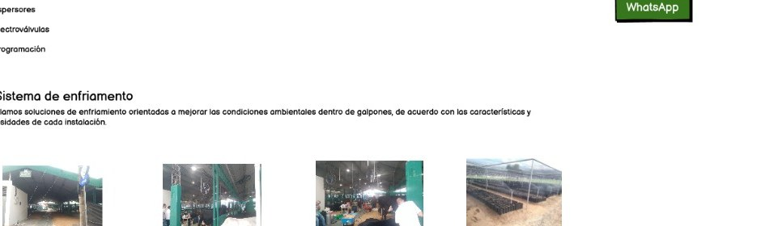

MANTENIMIENTO
Mantenimiento y reactivamiento.
Recuperamos y optimizamos sistemas de riego existentes.

Recuperación y soporteDiagnóstico · reparación · programación
Soporte técnicoSolicitar mantenimiento →
Podemos ayudarte a recuperar el funcionamiento del sistema.
Revisamos los componentes, identificamos problemas y aplicamos acciones de mantenimiento para recuperar y optimizar sistemas existentes.
✓Diagnóstico del sistema existente.
✓Revisión de aspersores y electroválvulas.
✓Detección y reparación de fugas.
✓Programación y puesta en funcionamiento.
¿NECESITAS AYUDA?